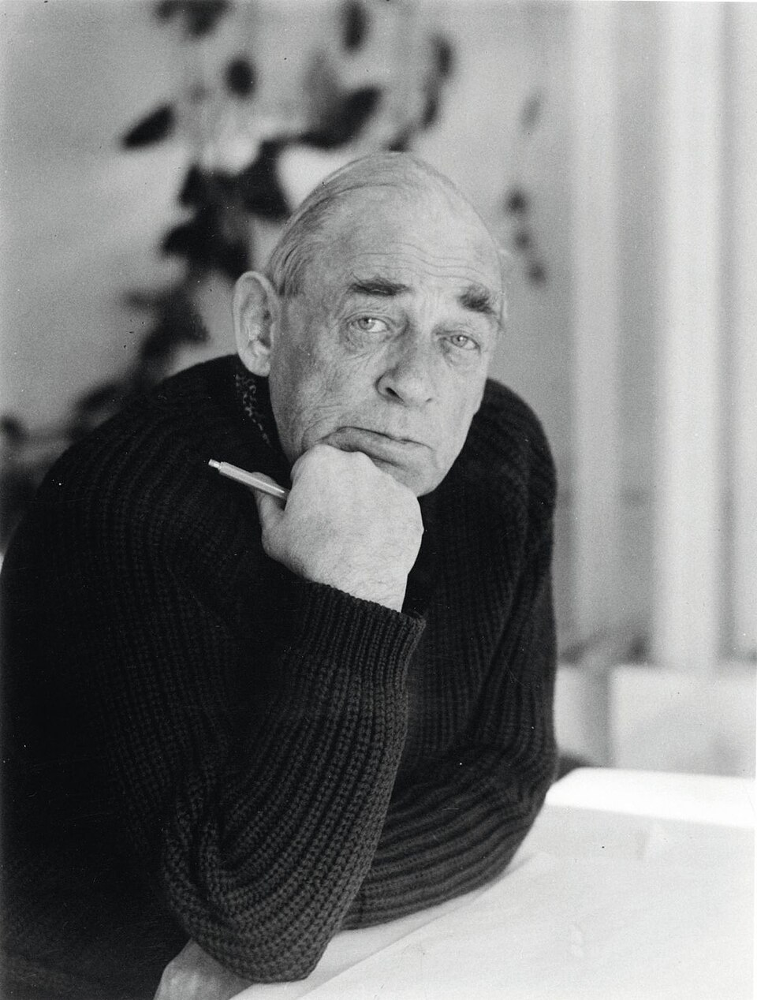
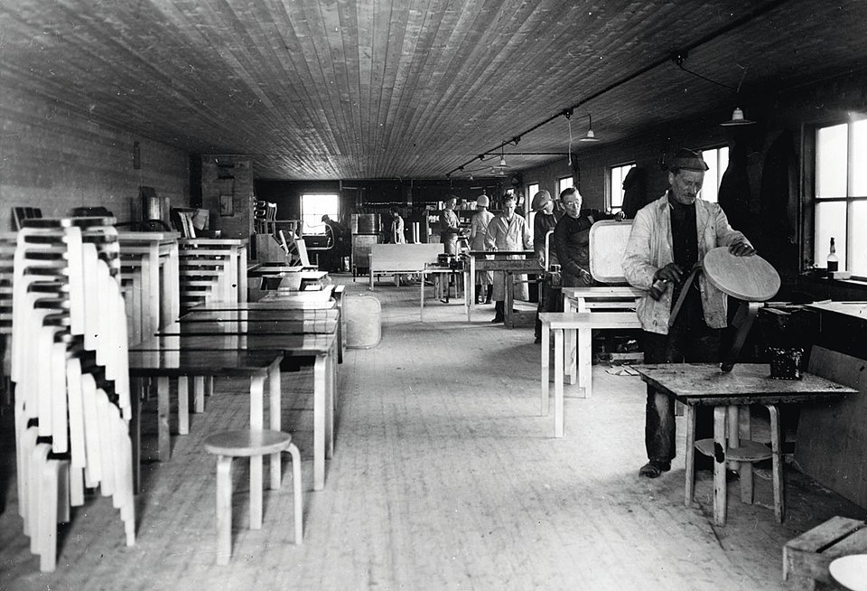

А́лвар А́алто[2], полное имя Алвар Хуго Хенрик А́алто[3] (фин. Hugo Alvar Henrik Aalto, 3 февраля 1898, Куортане — 11 мая 1976, Хельсинки) — финский архитектор и дизайнер, крупнейшая фигура в архитектуре Финляндии, ведущий представитель модернизма в Северной Европе, один из важнейших мастеров скандинавского дизайна. Оказал определяющее влияние на архитектуру, дизайн мебели и дизайн стекла XX века[4][5]. Считается одним из основоположников интернационального стиля[6][7].
Материал из Википедии — свободной энциклопедии. В Википедии есть статьи о других людях с фамилией Аалто.
Алвар Аалто родился 3 февраля 1898 года в небольшой общине Куортане в западной Финляндии в семье геодезиста Йохана Хенрика Аалто и начальницы почтового отделения Сельмы Матильды Аалто (урождённой Хакстедт). В семье говорили на финском (отец) и шведском (мать) языках. Когда Алвару исполнилось пять лет, семья переехала: сначала в Алаярви, а затем в Ювяскюля в центральной Финляндии. Там Аалто окончил лицей Йювяскюля (фин. Jyväskylä Lyceum). Во время учёбы он брал уроки рисования у местного художника Йонаса Хейска. В 1916 году поступил в Политехнический институт города Гельсингфорса, где учился у Армаса Линдгрена. В 1918 году его учёба была прервана гражданской войной. Аалто принимал участие в боевых действиях на стороне «белых». По окончании войны он вернулся на студенческую скамью и в 1921 году окончил институт, став дипломированным архитектором[8]. К моменту окончания института он построил по собственному проекту дом для родителей в Алаярви. Летом 1922 года он был официально призван в армию и демобилизовался в чине младшего лейтенанта в июне 1923-го.
Карьера Аалто как дизайнера совпала с периодом экономического роста и индустриализации Финляндии. Работа Аалто поддержана ведущими промышленниками страны, среди которых можно назвать семью Альстрём-Гуллихсен (швед. Ahlström-Gullichsen). Алвар Аалто внёс вклад в развитие таких архитектурных стилей, как северный классицизм XX века (1920-е), интернациональный стиль и модернизм . В мебельном дизайне работы Аалто считаются образцом скандинавского дизайна. Важной чертой стиля Аалто было отношение к своим работам с позиций «единого произведения искусства»[9], что на практике означало не только создание архитектурного проекта, но и формирование деталей: материала и цвета поверхностей, освещение, фурнитуры, мебели и т. д. Рассматривал архитектуру как форму реализации внутренней идеи
Испытал влияние неоклассицизма Гуннара Асплунда и европейского архитектурного авангарда, на основе которой стала складываться его индивидуальная манера. В поисках новых конструктивных форм отдавал предпочтение природным материалам (эксперименты с гнутой древесиной: мебель, беспредметные композиции).В 1923 году открыл своё первое бюро в Йювяскюля[11]. В 1933 году он переехал в Хельсинки, где начал сотрудничество с компанией «Артек», которая начала выпуск предметов интерьера, становившихся образцами современного стиля и финского дизайна. Благодаря поддержке лесоперерабатывающих концернов продемонстрировал возможности деревянной архитектуры в проектах для Всемирных выставок в Париже (1937) и в Нью-Йорке (1939); гибко сочетал традиции народного зодчества с новизной авангардных приёмов, свободу пространственных композиции с красотой северного пейзажа (вилла). В 1932 году принимал участие в проекте «Современная архитектура: интернациональная выставка» в Музее современного искусства
В 1935 году Алвар Аалто совместно с Гарри и Майрой Гулликсенами принимал участие в создании компании Artek (фин.)[5][12]. Компания задумывалась как «манифест современного образа жизни»[13]. Важным обстоятельством новой художественной системы стало обращение к повседневным вещам[14]. Алвар Аалто и поддержанная им компания Artek сформировали важный прецедент — присутствие дизайна в бытовой среде[5]. «Artek сделал возможным новую картину быта, которая могла быть реализована в повседневных вещах»
Работы Алвара Аалто обозначили интернациональный статус финского дизайна. В 1933 году Аалто создал серию стеклянной посуды для выставки в Лондоне [16]. В 1936 году Алвар и Айно Аалто получили гран-при на VI Миланской триеннале, став первыми финскими дизайнерами, удостоенными награды на заметном интернациональном художественном смотре. Имя Алвара Аалто можно рассматривать как интернациональный символ финского дизайна[17]. Для Парижской всемирной выставки 1937 года первоначально рассматривался проект Эльны Кильяндер «комната мальчика», но в последний момент отдали предпочтение Алвару Аалто, создавшему выставочный павильон Финляндии "дерево в движении"(дословно) (фр. Le bois est en marche)[18].
С именем Алвара Аалто связано систематическое развитие интернационального стиля в Финляндии[7][19]. Алвар Аалто стал одним из архитекторов, который опирался на архитектурный формат нового типа[20], поддержанный установлением архитектурного модернизма[21]. Искусствовед Екатерина Васильева отмечает: «Строительная практика, инициированная Аалто, подразумевала преодоление форм национальной романтики и более или менее последовательное установление новой архитектурной стратегии»[22]. В 1932 году Аалто был единственным скандинавским архитектором, принимавшим участие в выставке «Современная архитектура: интернациональная выставка»[23], давшей начало и название Интернациональному стилю[24][25]. «Использование форм интернационального стиля стало важным обстоятельством формирования национальной художественной программы»[26].
Иногда систему интернационального дизайна, созданную Аалто, рассматривают как основу финской идентичности[4][5][27]. Аалто оказался одним из наиболее последовательных сторонников новой архитектуры[28], которая стала основой новой художественной программы[4]. Концепция дизайна, созданная Аалто обозначила стремление к новизне, где модернизм воспринимался одним из символов прогресса[26]. Дизайн Алвара Аалто в его новых формах был демонстрацией нового социального и художественного стандарта[5]. Работы Алвара Аалто можно рассматривать как важный атрибут нового быта[19] и символ нового образа жизни [7].
В довоенное время Аалто построил санаторий в Паймио (1929—1933) и городскую библиотеку в Выборге (1930—1935), виллу «Майреа» в Нормаркку (1939). В 1940—1948 годах Аалто работал и преподавал в США, где осуществил ряд проектов, таких как общежитие MIT в Бостоне. В 1949 году умерла его супруга и постоянный партнёр по проектной работе Айно Марсио-Аалто. Вернувшись в Финляндию, Аалто сотрудничал с Элиссой Мякиниеми; они поженились в 1952 году.
Аалто осуществил ряд проектов крупных общественных зданий: муниципальный центр в Сяюнятсало (1950—1952), Управление пенсионного обеспечения (1952—1956), Дом культуры рабочих (1955—1958) и дворец «Финляндия» (1967—1971; все в Хельсинки), Дом северных стран в Рейкьявике (1965—1968). Автор многих проектов церковной архитектуры, в том числе церкви Трёх крестов в Вуоксенниска (1958), приходских центров в Вольфсбурге (1963) и в местечке Риола под Болоньей (1966, построен в 1975—1980 годах). Создатель промышленных сооружений в Топпиле (1931), Суниле (1936—1939), Оулу (1951—1957), жилых домов в Бремене (1958—1963), вилл, выставочных павильонов. Выступал и как градостроитель в Рованиеми (1946—1948) и Сяйнятсало (1949—1952).От строго геометрических форм ранних построек пришёл к самобытному сочетанию национальных традиций, принципов функционализма и органической архитектуры, к свободе и гибкости объёмно-пространственной композиции, умело вписанной в природную среду. В постройках Аалто богато используется дерево. Некоторые из его градостроительных замыслов, отличавшиеся свободной композицией объёмов и живописной ландшафтной планировкой, были реализованы посмертно в Рованиеми и в Сейняиоки.
1923 — Вилла Маннер, Тёуся 1924—1925 — Дом трудящихся, Ювяскюля, Финляндия 1927—1935 — Библиотека в Выборге, Россия 1928—1933 — Туберкулёзный санаторий в Паймио, Финляндия 1935—1936 — Дом Алвара и Аино Аалто в Хельсинки, Финляндия 1936—1954 — целлюлозная фабрика с жилым кварталом, Котка, Финляндия 1938—1939 — Вилла Майреа в Нормаркку, Финляндия 1947—1949 — Кампус университета MIT в Массачусетсе 1949—1952 — Мэрия в Ювяскюля, Финляндия 1949—1964 — Политехнический институт в Эспоо, Финляндия 1951—1959 — Педагогический институт, Ювяскюля, Финляндия 1951—1987 — Центр города Сейняйоки, Финляндия 1952—1954 — Экспериментальный летний дом в Мууратсало, Финляндия 1952—1958 — Культурный центр в Хельсинки, Финляндия 1955—1957 — Многоквартирный жилой дом в районе Ганзафиртель в Берлине, Германия 1955—1958 — Церковь трёх крестов в Иматре, Финляндия 1958—1962 — Многоквартирный жилой дом в Бремене, Германия 1956—1961 — Павильон для мероприятий, Базош-сюр-Гион (фр.), Франция 1962—1975 — Дворец «Финляндия» в Хельсинки, Финляндия 1978 — Церковь Риола в Вергато, Италия
Ваза Аалто Консольный стул из дерева
Своё представление о достоинстве творческого труда Аалто воплотил в проекте собственной мастерской близ Хельсинки (1955) со внутренним двором в форме амфитеатра (лекционный зал под открытым небом). С 1928 по 1954 год участвовал и являлся членом оргкомитета Международных конгрессов по современной архитектуре. Был президентом Союза финских архитекторов (1943—1958) и Академии Финляндии (1963—1968). Аалто оказал значительное влияние на поколение молодых архитекторов разных стран. Почётный иностранный член Американской академии искусств и наук (1957). Кавалер Золотой медали Американского института архитектуры (1963).
Новый университет, учреждённый 1 января 2010 года путём слияния трёх высших учебных заведений Финляндии, специализировавшихся в области технологии и дизайна, был назван Университетом Аалто (фин. Aalto-yliopisto). Медаль Алвара Аалто[англ.] — одна из наиболее престижных международных наград в области архитектуры.